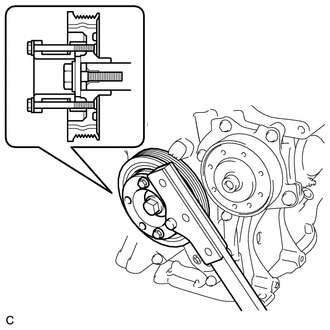
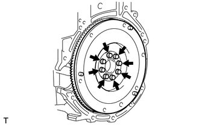
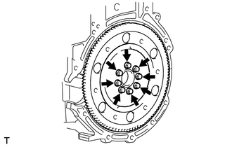
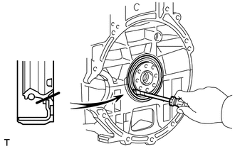

RM3140CG
_51
发动机/混合动力系统
_023967
4ZR-FE 发动机机械部分
_0129876
曲轴后油封
A
4ZR-FE 发动机机械部分 曲轴后油封 拆卸
注意/小心/提示
- 备注：
-
手动传动桥：
-
拆下手动传动桥总成时，确保使用新的带轴承的离合器分离缸总成和新的安装螺栓。 拆下手动传动桥总成会使压紧的带轴承的离合器分离缸总成返回其原始位置。 移动部位的灰尘可能损坏带轴承的离合器分离缸总成的密封，从而导致离合器油泄漏。
程序

 1.拆卸离合器盘总成（手动传动桥）
1.拆卸离合器盘总成（手动传动桥）
2.拆卸无级变速传动桥总成 (CVT)
3.拆卸飞轮分总成（手动传动桥）
a.
使用高度可调附加支撑块和平板式举升机附加支撑块，将发动机总成放置在平坦、水平表面上。
- 备注：
- ·
使用高度可调附加支撑块和平板式举升机附加支撑块，水平放置发动机总成。
·维修前，使用发动机吊链装置和发动机升降机固定发动机总成。
b.

1.344,2.24 0.906,3
0.906,3 2.365,3
true
0.594,2.938 0.99,3.198
0.396,0.26
10
false
SST
使用 SST，固定曲轴皮带轮。
- SST
- 09213-54015 09330-00021
- 提示：
-
SST 安装螺栓的零件号（曲轴皮带轮固定工具）：91551-00850（数量：2）
c.

从曲轴上拆下 8 个螺栓和飞轮分总成。
4.拆卸传动板和齿圈分总成 (CVT)
a.
使用高度可调附加支撑块和平板式举升机附加支撑块，将发动机总成放置在平坦、水平表面上。
- 备注：
- ·
使用高度可调附加支撑块和平板式举升机附加支撑块，水平放置发动机总成。
·维修前，使用发动机吊链装置和发动机升降机固定发动机总成。
b.
1.344,2.24 0.906,3
0.906,3 2.365,3
true
0.594,2.938 0.99,3.198
0.396,0.26
10
false
SST
使用 SST，固定曲轴皮带轮。
- SST
- 09213-54015 09330-00021
- 提示：
-
SST 安装螺栓的零件号（曲轴皮带轮固定工具）：91551-00850（数量：2）
c.

从曲轴上拆下 8 个螺栓、传动板后隔垫、传动板和齿圈分总成以及传动板前隔垫。
5.拆卸发动机后油封
a.

0.823,0.406 0.979,0.406
0.979,0.406 0.833,1.365
false
2.844,0.458 2.594,0.458
2.594,0.458 2.031,1.333
true
0.646,0.354 0.906,0.656
0.26,0.302
10
*b
2.865,0.385 3.219,0.635
0.354,0.25
10
*a
| *a | 保护胶带 |
| *b | 切口位置 |
用刀子切掉发动机后油封的唇口。
b.
使用螺丝刀撬出发动机后油封。
- 备注：
-
拆下后，检查曲轴是否损坏。如果损坏，则用 400 号粗砂纸磨平曲轴表面。
- 提示：
-
使用螺丝刀之前，请在螺丝刀头部缠上胶带。